Heterogeneity and transmission scaling¶
| Author: | Daniel J. Klein, Senior Research Scientist, IDM |
|---|
Overview¶
Models of disease transmission often assume a homogeneous pattern of mixing between individuals that
stems from a mechanism in which the population is sufficiently “well-mixed” to make each individual
equally likely to next encounter each other individual. Along with this mixing assumption, simple
models additionally suppose that susceptibility and infectivity are homogeneous across the
population. These assumptions enable elegant mathematical calculations to be performed, including
those for the base reproductive rate, 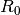, and endemic equilibrium. Homogeneous mixing also
greatly simplifies implementation in the sense the only a single transmission constant,
 , is required to describe the transmission rate per person.
, is required to describe the transmission rate per person.
However, assumptions of homogeneity quickly become invalid when considering the complexities of disease transmission. Spatial effects, even at relatively small scales, can invalidate the well- mixed assumption, particularly if the disease is highly infectious or the population density is high. Non-uniform patterns of mixing based on age are well-documented in school-based disease transmission [1]. Susceptibility and infectivity are inherently heterogeneous, as governed by both behavioral and biological factors including hand washing, viral load, and immunity. Many of these factors can be targeted by interventions that potentially have non-uniform uptake, for example due to differences in accessibility.
These sources of heterogeneity are abundant in almost every infectious disease. The “right”
level of heterogeneity to include in a model depends on the question being asked, but rarely is
a purely homogeneous model sufficient. The Epidemiological MODeling software (EMOD) has
long-supported heterogeneity in the form of “nodes.” Each node represents a small
geographical area that can have customized parameters. Individuals migrate between nodes either
temporarily or permanently using mobility patterns driven by local, regional, and long-distance
transportation. While nodes have long provided the capability to model large-scale spatial
heterogeneities, disease transmission within each node was homogeneously governed by a single
transmission parameter, Base_Infectivity, which determined .
Heterogeneous Intra-Node Transmission (HINT)¶
EMOD implements the Heterogeneous Intra-Node Transmission (HINT) feature that enables the modeler to include disease transmission heterogeneities within each node. Intra-node heterogeneity is driven by “individuals properties,” each of which has an associated discrete set of “values.” Examples of individual properties, with typical values given parenthetically, include risk group (low, medium, high), age group (under 5, 5 to 15, over 15), vaccine accessibility class (easy, hard), intra-node locale (census tracts), and place (home, school, work, community, non-school). All nodes in a simulation must have the same individual properties and values, but the characteristics of the heterogeneity can vary from node to node.
Associated with each individual property is a values-by-values-sized matrix of multipliers, denoted
, that scale base infectivity, 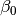. Specifically, the entry of the
multiplier matrix at row  and column
and column  determines the transmission constant from
infected individuals having the
determines the transmission constant from
infected individuals having the  value to susceptible individuals having the
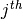 value.
value to susceptible individuals having the
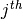 value.
Two individual properties can be combined to achieve a higher level of transmission heterogeneity. When multiple individual properties are configured, their effects are combined independently via multiplication of the appropriate multipliers. For example if the individual properties are age group (young and old) and vaccine accessibility (easy and hard),
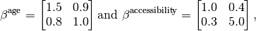
the transmission multiplier from an infected individual who is a young and hard to access to a susceptible individual who is old and easy to access will be 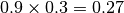. Similarly, the multiplier from an infected young vaccine refuser to a susceptible young vaccine refuser will be 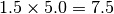. While most multiplier matrices are symmetric, asymmetries as in the above example can arise for several reasons including heterogeneity in susceptibility.
The product of the base infectivity, , and the multiplier matrix, ,
governs “who acquires infection from whom,” and thus is sometimes called the WAIFW matrix. The
values in this matrix can be thought of as the “effective contact rate,” where an effective
contact is defined as one that will result in disease transmission were it between a susceptible
and infected individual [2].
Disease dynamics¶
EMOD is an exceptionally powerful software tool. Even in “generic” mode, EMOD is capable of simulating spatially diverse Susceptible-Exposed-Infected-Recovered (SEIR model) and SEIRS dynamics, including options for non-exponential incubation and infectious periods, inter-node migration, and density- or frequency-dependent transmission.
Single homogeneous node¶
The mathematical fundamentals underlying generic disease dynamics are most vividly illustrated in a single well-mixed community. In EMOD, this scenario corresponds to a single node without HINT. To simplify presentation of the mathematical principles, we focus on the well-known SIR model dynamics with exponentially distributed waiting times between state transitions.
In mathematical biology, disease dynamics are often presented in terms of the proportion of the initial population in susceptible, infected, or recovered states (SIR). Because EMOD represents individuals, and to be clear about mechanisms by which the transmission rate varies as a function of the node population, we instead present the dynamics in terms of the number of individuals 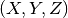 in place of 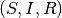, respectively.
The governing dynamics can be written as an ordinary differential equation (ODE) with fixed
birthrate  , death rate
, death rate  , and recovery rate
, and recovery rate  .
.
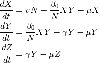
Here 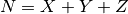 is the total number of individuals.
The ODE dynamics in (2) are deterministic and continuous. In a finite population of individuals, there is no way to precisely replicate these dynamics, and it is not clear that one would want to in practice because disease transmission is an inherently stochastic process that unfolds in a population of finite size.
In EMOD, the state changes at fixed time steps. The size of the time step, denoted
 , is selected to be small compared to the characteristic timescale of the disease
dynamics. Each update step consists of three primary sub-steps:
, is selected to be small compared to the characteristic timescale of the disease
dynamics. Each update step consists of three primary sub-steps:
- Shed: The default behavior in a homogeneous generic simulation is for each infected individual to shed contagion at a fixed rate. The total rate of contagion shedding from all infected individuals is called the force of infection, 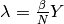.
- Expose: Each susceptible individual becomes infected with probability
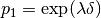, where
 is the time step.
is the time step. - Finalize: The final part of each time step contains recovery from infection and disease
mortality for infected individuals, along with basic demographic updates. EMOD supports advanced
demographics, but here we use the per-capita birth and death rates as in (2).
- Recovery: Each infected individual recovers in one time step with probability, 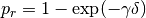.
- Birth: For birthrate , the number of new susceptible individuals will be
Poisson distributed with rate 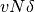.
- Natural Death: The probability of death for each individual is 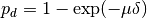.
Putting these pieces together over the course of a time step, let:
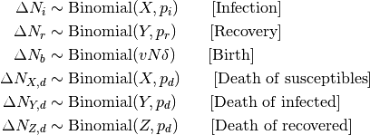
With these numbers in mind and assuming that only one state transition event happens to each individual in a time step:
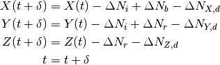
HINT node with one individual property¶
HINT feature adds the ability to simulate heterogeneity within each EMOD node. It is enabled
through individual properties defined in the demographics file. The disease dynamics parallel the
homogeneous case. To begin, consider a single node with one individual property having  values. The
values. The  ,
,  , and
, and  disease states will gain an
disease states will gain an  subscript to
index into the individual property values. Using the user-provided multiplier matrix of size
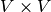, the ODE-form of the disease dynamics are:
subscript to
index into the individual property values. Using the user-provided multiplier matrix of size
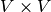, the ODE-form of the disease dynamics are:
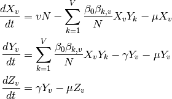
For 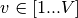. From this ODE, conversion to an individual-based implementation follows the methods for a homogeneous node presented above.
At simulation initialization, individuals are assigned stochastically to values of the individual property according to the distribution specified in the demographics file. Note also that intra-node transmission heterogeneities can be transmission-route specific.
HINT node with multiple individual properties¶
Multiple individual properties can be easily configured in the EMOD demographics file. When
enabled, the heterogeneity induced by separate individual properties act independently. As an
example, consider two individual properties, 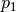 and  , having 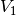 and
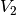 values, respectively. The multiplier matrices will be denoted 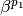 and
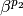, and have sizes 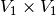 and 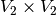, respectively.
The resulting disease dynamics in ODE-form are:
, having 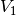 and
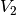 values, respectively. The multiplier matrices will be denoted 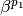 and
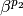, and have sizes 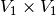 and 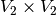, respectively.
The resulting disease dynamics in ODE-form are:
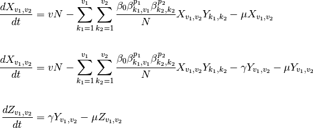
For indices 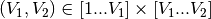.
When configured for multiple individual properties, EMOD assigns individual property values to individuals independently based on the separate probability distributions provided by the user in the demographics file.
Transmission scaling¶
Disease transmission depends on the rate effective contacts as represented by parameter . But what happens to the effective contact rate as the size of the population changes? There are two commonly accepted answers: frequency-dependent and density-dependent transmission scaling.
Frequency versus density-dependent transmission scaling¶
The two common forms of transmission scaling with population (more precisely, population density) are:
Frequency dependence, true mass action¶
The number of effective contacts per person per unit time is independent of the population size. A single infected person in a node with a large population will infect just as many people as they would in a node with a small population. One way to think about this is that the population density is fixed, so that the node with the large population is spread over a large area. For this case,
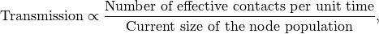
so that the transmission rate inversely proportional to 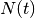. The dynamics described above, starting from (2), are frequency-dependent because the parameter is divided by the current node population, .
Density dependence, pseudo mass action¶
The number of effective contacts per person per time is proportional to the population. Think of a
room containing  individuals. A single highly-infectious cough would infect more people if the
number of people in the room (population density) was higher. For this case,
individuals. A single highly-infectious cough would infect more people if the
number of people in the room (population density) was higher. For this case,
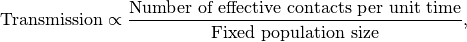
Usually, the denominator is taken as 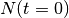, the initial node population. Note that the transmission rate per capita is a constant in this case. Density-dependent transmission is often found in SIR models which inherently neglect the total population size.
Transmission scaling in EMOD¶
EMOD supports flexibility in transmission scaling above and beyond pure frequency- or density-dependent scaling. The default configuration employs frequency-dependent scaling, the most commonly- used form of scaling in computational epidemiology. For version 1.6, EMOD allows the transmission rate to scale as a saturating function of population (density) [3], even when HINT is enabled. The force of infection contributed by each infected individual under these two cases of transmission scaling are as follows:
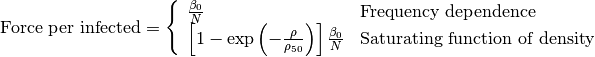
Here,  is the population density and 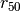 is an input parameter the governs the
transition from density to frequency dependence. The population density is computed as
is the population density and 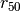 is an input parameter the governs the
transition from density to frequency dependence. The population density is computed as
 where
where  is is the area of the node. This node area is in turn computed from the
longitude and latitude of the node center point (from the demographics file) and the node size. It
is assumed that all nodes have equal size in terms of the degrees of latitude and longitude, as
determined by configuration parameter Node_Grid_Size. Denoting this node grid size by
is is the area of the node. This node area is in turn computed from the
longitude and latitude of the node center point (from the demographics file) and the node size. It
is assumed that all nodes have equal size in terms of the degrees of latitude and longitude, as
determined by configuration parameter Node_Grid_Size. Denoting this node grid size by  , the area of
a node located at (lat, lon) is computed based on the corresponding area of a sphere,
, the area of
a node located at (lat, lon) is computed based on the corresponding area of a sphere,
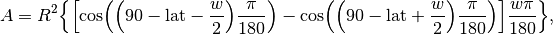
where 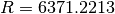 km is the radius of Earth.
The saturating function of density is enabled by setting the following EMOD configuration parameter: Population_Density_Infectivity_Correction: SATURATING_FUNCTION_OF_DENSITY
Finally, the parameter is configured using an EMOD configuration parameter Population_Density_C50.
Contact scaling¶
HINT and transmission scaling allow the EMOD user to specify and control heterogeneity within EMOD. One potential application for these features is in configuring “contact scaling,’’ a particular form of heterogeneous mixing in which shedding and acquisition are symmetric. The best example of contact scaling is location-based mixing, which can be used in place of intra-day migration. Typical places for location-based mixing include home, school, and work. Contact scaling could also be used for mixing between age groups.
Contact scaling is typically specified by a matrix, 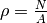. The entry at
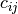 indicates that an individual with value sheds and acquires from mixing pool
with weight . Each row of the contact scaling matrix typically sums to one,
especially for location-based mixing wherein can be used to represent the fraction of
the day an individual with value spends at location .
In terms of implementation, there is one main difference between contact scaling and transmission
scaling. In contact scaling, individuals both shed into and acquire from pools of contagion
according to the corresponding row of the  matrix. Normalization is done not by ,
as in frequency scaling, but instead by the “effective population” of each mixing pool, which is
computed as the -weighted sum of the population-by-value. Transmission scaling via the
matrix directly specifies the transmission rate per susceptible between each group of
individuals, so there is no concept of place but the overall approach is more flexible, e.g. by
allowing asymmetries.
matrix. Normalization is done not by ,
as in frequency scaling, but instead by the “effective population” of each mixing pool, which is
computed as the -weighted sum of the population-by-value. Transmission scaling via the
matrix directly specifies the transmission rate per susceptible between each group of
individuals, so there is no concept of place but the overall approach is more flexible, e.g. by
allowing asymmetries.
Interestingly, contact scaling exhibits neither frequency-dependent nor density-dependent scaling, although it more closely resembles frequency-dependent transmission because the denominator is a function of the current population. Currently, contact scaling is not supported as an independent feature in the EMOD software, however one can simulate contact scaling to good approximation if the fraction of the population in each value 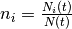 is constant or stabilizes quickly. Then EMOD can be configured using,
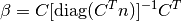
Here, is a -length column vector of the equilibrium fractions of the population by value. Absent
mortality factors or interventions moving individuals from one value to the next, should be close
to the probability distribution used to assign values to individuals.
Conclusion¶
EMOD is a powerful software tool for simulating generic disease dynamics. Amongst the many improvements offered by version 1.6 are the new capabilities described mathematically in this document: HINT and transmission scaling with population density. These improvements add to the long list of EMOD features that make it the most powerful disease simulation framework available today.
| [1] |
|
| [2] | M.J. Keeling and P. Rohani. Modeling infectious diseases in humans and animals. Princeton University Press, 2008. |
| [3] |
|